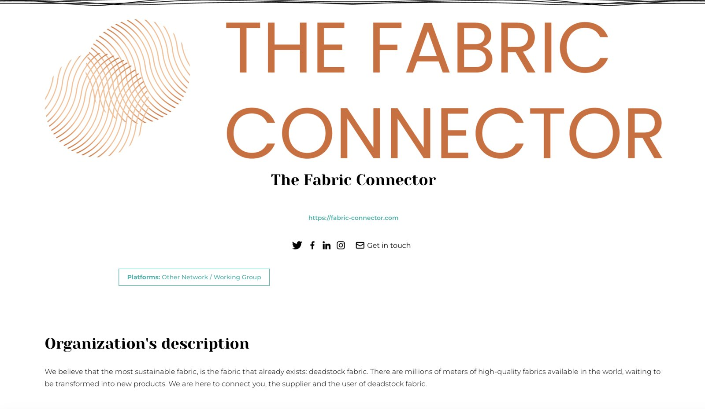
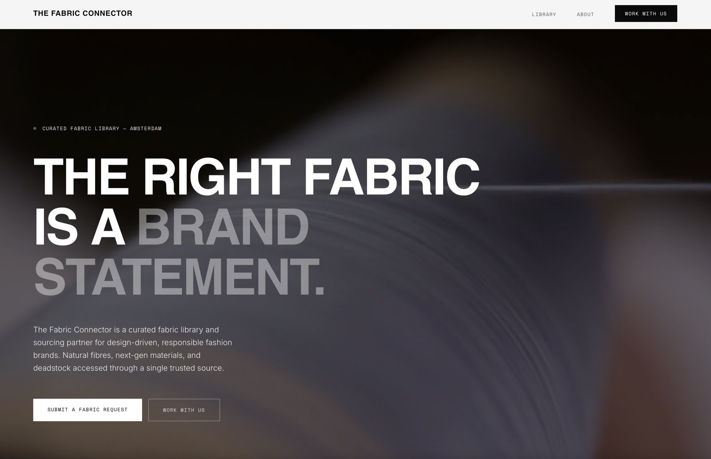
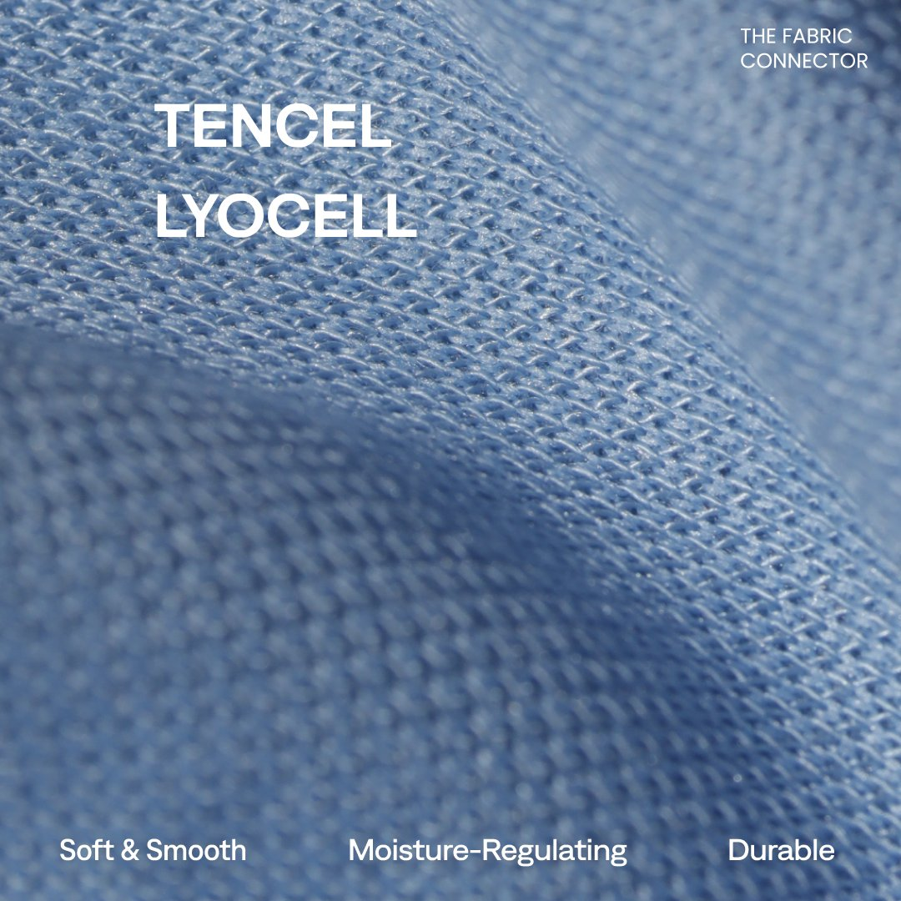
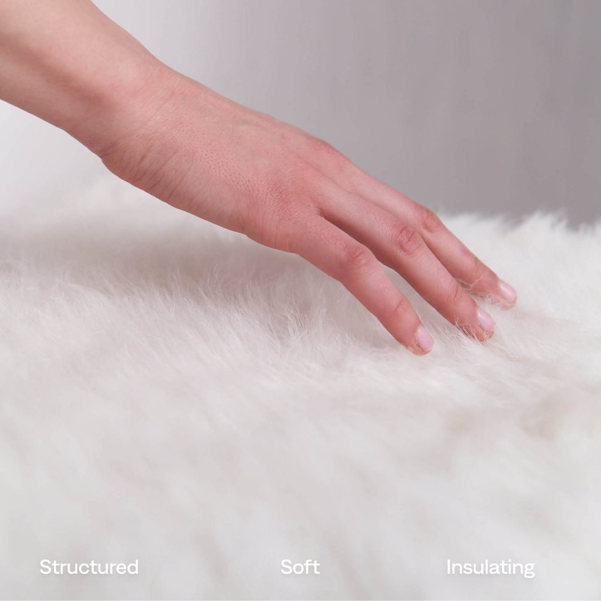
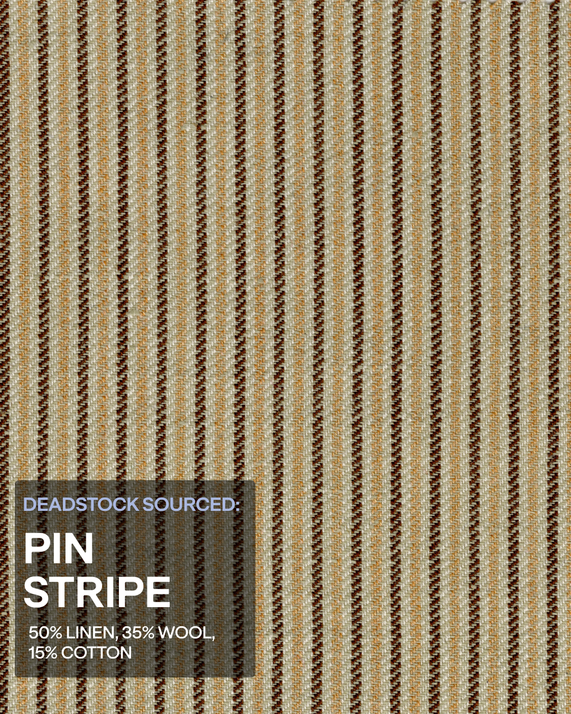
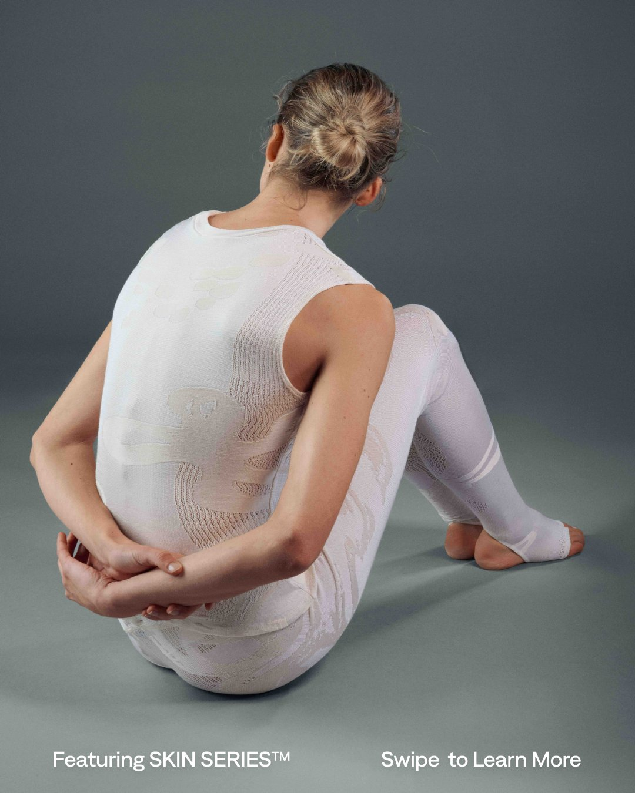
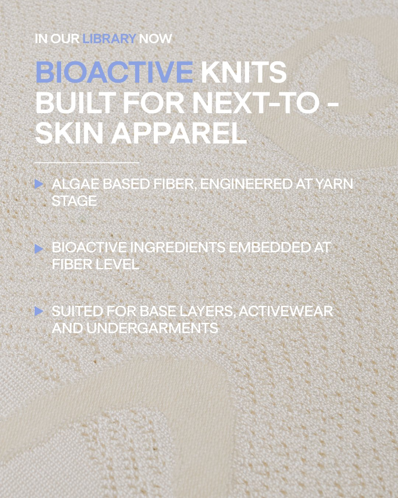

Case study
Positioning · Content · Brand partnerships
01 Overview
€0
Ad budget, organic only
3
Audience personas defined
2
Content pillars: Fabric IQ and EQ
2×
Posts a week, planned in Notion
The challenge
The Fabric Connector is an Amsterdam-based fabric library for design-led fashion brands. It launched in late 2025 around deadstock, but its reach came mostly from sustainability experts rather than the brands it sells to, and soon dropped by over 90%. Together with the founder, we repositioned it as a curated, premium library of natural fibres, next-gen materials and deadstock. My job was to bring that to life organically and rebuild the audience around the right people.
My role · Brand Manager
02 Approach
01
Know exactly who you're talking to
Defined two primary audiences who behave the same way on Instagram: founders and creative directors, and designers and product developers at independent and mid-sized European brands, with sourcing managers as a secondary audience. All three are allergic to greenwashing and vague claims, so radical transparency became the thread through every message.
02
Fabric IQ and Fabric EQ
Competitors with 50K+ followers showed their fabrics but rarely explained them. Fabric IQ makes the follower smarter in under a minute: deep-dives, buying checklists, regulation explainers. Fabric EQ shows the fabric in the world, on a body and next to its swatch. Lead with a fact, not a mood. Two posts a week, planned in Notion.
03
Borrow the right audiences
Growing organically from an audience of sustainability experts meant reaching brands through other people's audiences. I initiated brand collaborations, putting TFC's materials in front of design-led brands, and ran direct outreach from first contact to onboarding.
03 Execution
From one category to three pillars
Before, deadstock was the whole story. After, it became one part of a curated library of natural fibres, next-gen materials and deadstock.

Before: deadstock as the whole story

After: "The right fabric is a brand statement"
One content system, two pillars
Fabric IQ explains what a material does. Fabric EQ shows how it feels. Same visual language, so a designer scrolling the feed sees a sourcing expert, not a deadstock shop.

Fabric IQ: what the material does

Fabric EQ: how the material feels
A brand collaboration
Fabric EQ in practice: a finished garment next to the deadstock fabric behind it, with the specs a designer needs right on the swatch.
The garment: deadstock pinstripe, styled

The fabric: 50% linen, 35% wool, 15% cotton
A supplier launch concept
An unpublished carousel for a supplier's bioactive knit: from material science to a benefit a designer can pitch internally.

Concept: the knit on the body

Concept: the benefits, in plain words
+178%
Instagram reach
+74%
Content interactions
3+
New brand clients onboarded
3+
Industry collaborators brought in
Instagram figures: Jun–Aug 2026 vs the previous three months, Meta Insights. 100% organic.
04 Key takeaway
Repositioning a brand on paper takes a few weeks. Repositioning it in people's feeds takes months: the website changes overnight, but the audience has to be earned post by post. With no budget, the levers were consistency, real expertise and the right partners, and together they turned a fading account into a growing one.